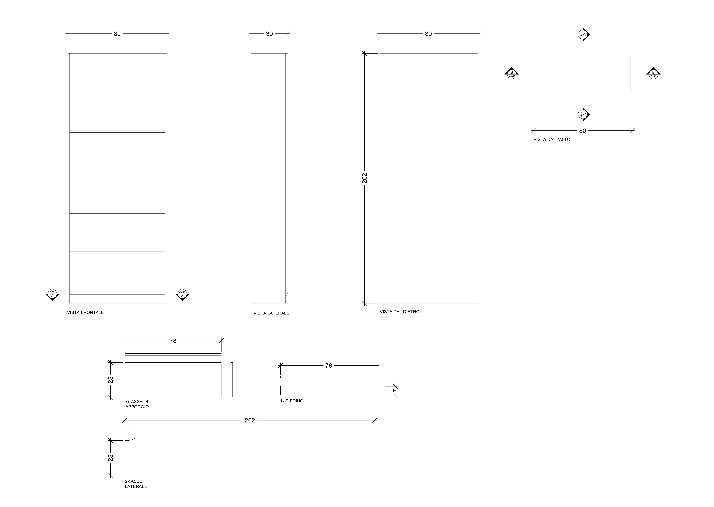
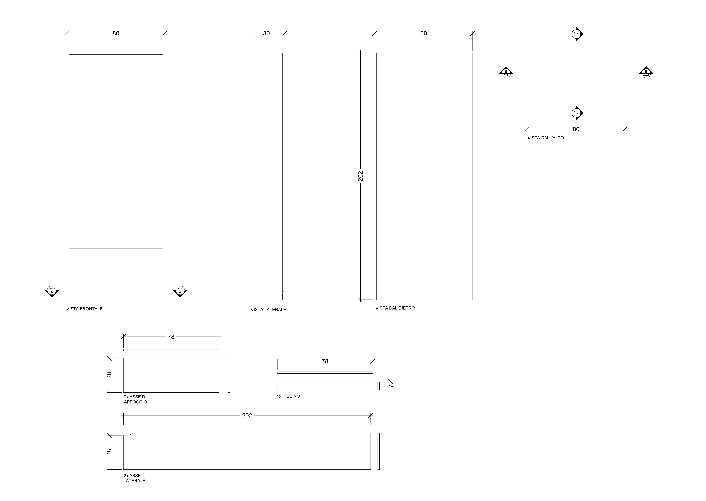

QM-S_1_STUDIO
DESCRIZIONE DEL PROGETTO
Nel corso di questa esercitazione il lavoro è stato suddiviso in diverse fasi: siamo partiti da un progetto di ampliamento di
Quinta Monroy, Mexico, nella scala 1:50, per arrivare a una rappresentazione nelle scale più grandi degli arredi scelti per una particolare stanza. Nel mio caso mi sono
occupata della prograttazione e dell'arredamento della stanza studio, della quale ho curato la scelta della tappezzeria, della pavimemtazione e degli arredi da posizionarvi all'interno, ponendomi
l'obiettivo di ricreare una dimesione il più possibile confortevole per il futuro frtiore dell'ambiente.
AMBIENTE STUDIO

L'ambiente studio è una stanzetta di 8 metri quadri che si trova immediatamemte sulla sinstra dell'ingresso all'appartamento caratterizzata da un arredo color crema, grigio scuro oppure nero.
L'ambiente è pensato come suddiviso in due zone a seconda
dell'attività che si preferisce svolgere: una zona lettura e una zona ufficio. La prima si trova in un angolo della stanza dove sono posizionati: una poltrona Poäng con coperetura bianca,
una lampada da terra Not, un tavolino Kragsda in legno e un portariviste Spontain in acciaio. La zona lettura si trova esattamente alle spalle della zona ufficio, che è invece posizionata
davanti alla finestra. Qui troviamo una scrivania Arkerstorp in legno di pino massiccio, affiancata da una lampada da tavolo Harte e una sedia Berhard con rivestimento in pelle nera. Di fianco alla porta
della stanza si trova un armadio Askvoll e una libreria Billy immediatamente dopo. Il pavimento è rivestito di
un parquet tundra in laminato effetto rovere, mentre il tappetto al centro della stanza è un pelo lungo grigio scuro. Dal soffitto pende una lampada in acciaio Hektar, infine la tenda è in tessuto
color panna. L'unico stacco cromatico è dato dal verde della pianta da interni che poggia su uno sgabello in legno di faggio, posizionata a fianco della scrivania.

GLI ARREDI PRINCIPALI


 



By Isabella Ruina.